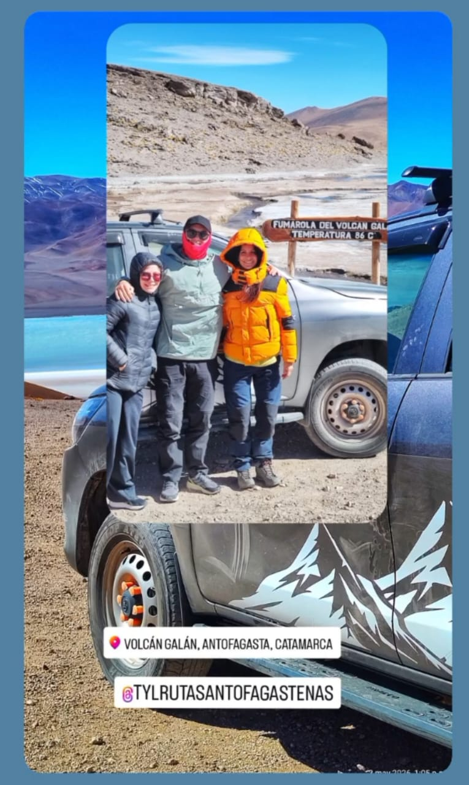

Vehículos últimos modelos
Flota moderna con equipamiento y seguridad de última generación para los caminos de altura.
Transporte y Turismo
Somos una empresa con base en Antofagasta de la Sierra. Recorremos la Puna catamarqueña con vehículos últimos modelos y guías profesionales habilitados.

Quiénes somos
Somos la empresa Transporte y Turismo Rutas Antofagasteñas, con base en Antofagasta de la Sierra. Estaremos muy contentos de realizar con ustedes nuestros circuitos más emblemáticos de Antofagasta. 🏔🌄🦙🇦🇷
Aseguramos la mejor relación precio-servicio, y una Guiada de Autor profesional y única, llena de fundamentos que colaboran en desafiar los sentidos en la visita a los imponentes destinos de nuestra Catamarca.
Hay mucho más para contarles,
mostrarles y maravillarse.
Cómo viajamos
Todo lo que llevamos a bordo está pensado para que la Puna se disfrute sin preocupaciones, a más de 3.300 metros de altura.
Flota moderna con equipamiento y seguridad de última generación para los caminos de altura.
Conectividad durante el trayecto, en una región donde la señal escasea.
Comunicación asegurada en todo momento, incluso fuera de cobertura.
Contacto permanente entre vehículos y guías durante todo el recorrido.
Disponible ante cualquier necesidad por la altura, durante toda la excursión.
Con habilitación provincial y departamental, y expertos en primeros auxilios.
Qué recorremos
Armamos el recorrido según tu grupo y tus tiempos. Contanos qué querés conocer
Nuestros viajes
Videos reales de nuestros circuitos. Tocá cualquiera para reproducirlo.

La mejor relación precio-servicio
Salares, volcanes, lagunas, dunas y cañones. Contanos qué fecha tenés y armamos el recorrido.
Consultar por WhatsAppLa región
Un pueblo en el corazón de la Puna catamarqueña, a más de 3.300 msnm. Desde ahí salimos a recorrer salares, volcanes, lagunas y dunas que parecen de otro planeta.
Dónde estamos
Nos encontrás en el centro de Antofagasta de la Sierra, punto de partida de todos los circuitos.
A su disposición
Escribinos por WhatsApp o por correo, y seguinos en redes para ver más de la región.